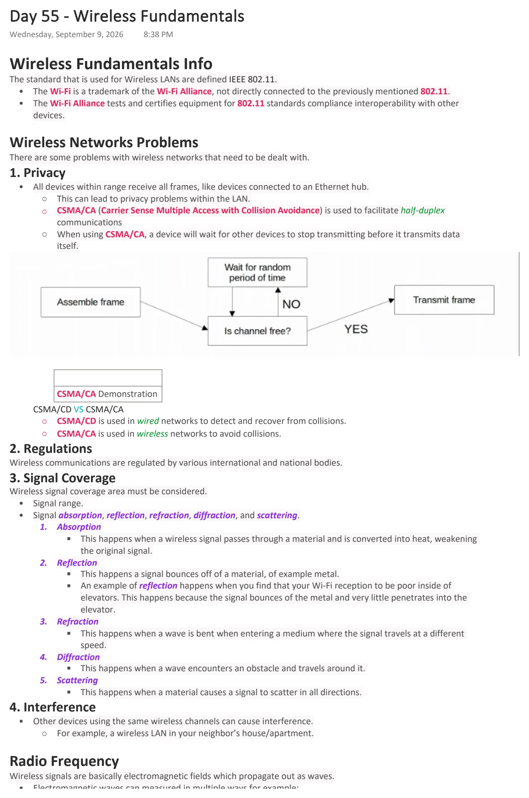
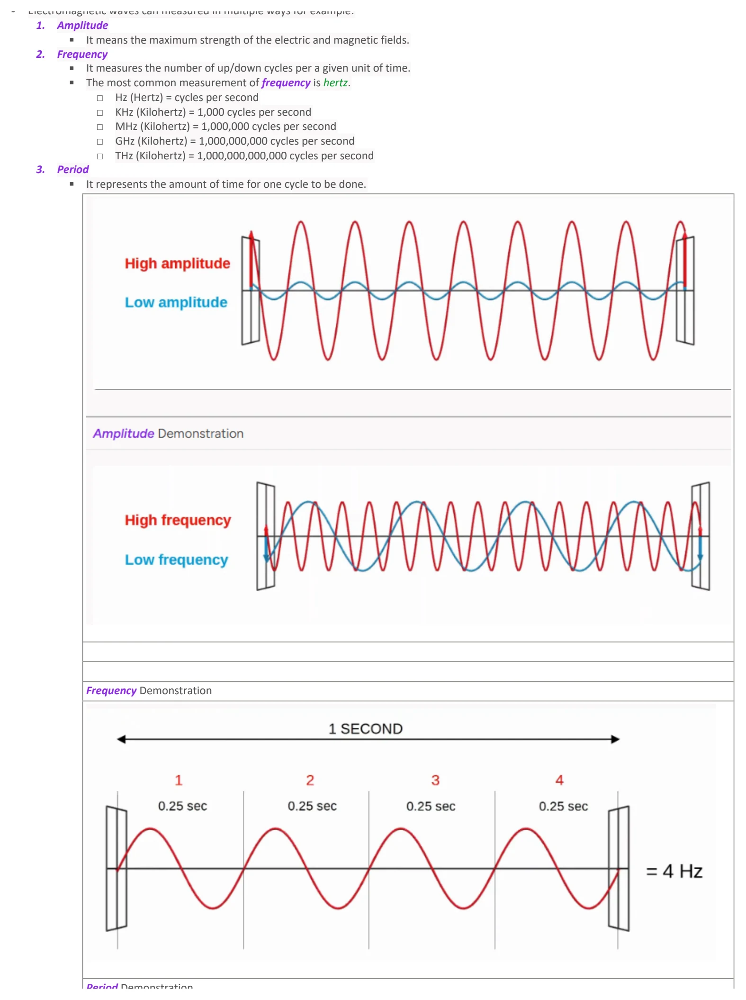
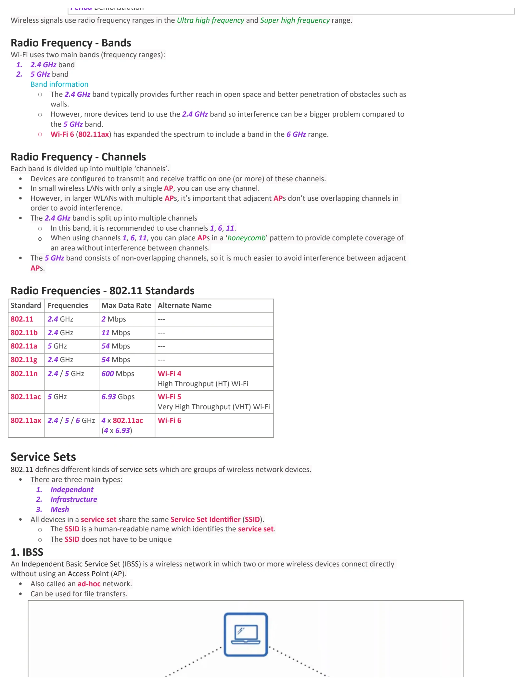
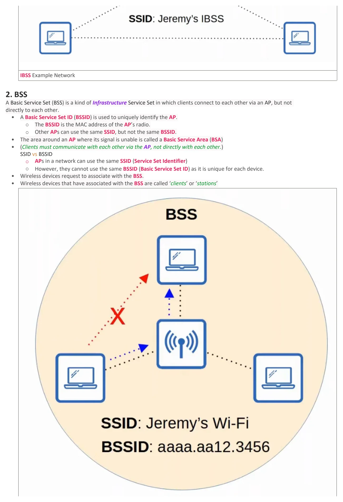
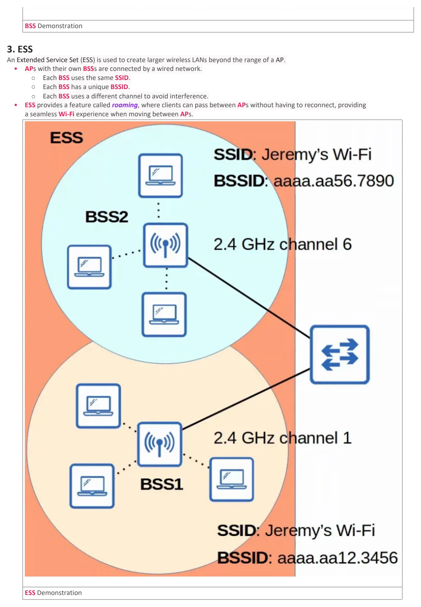
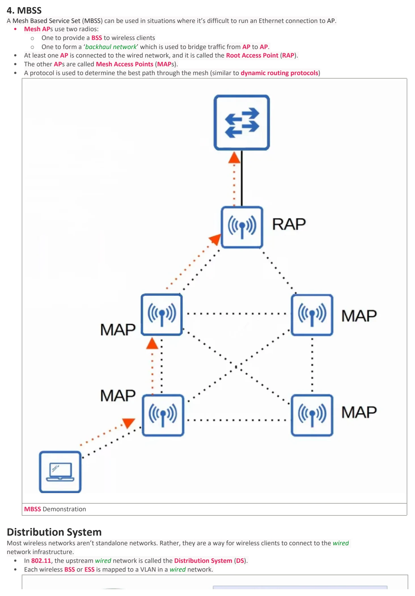
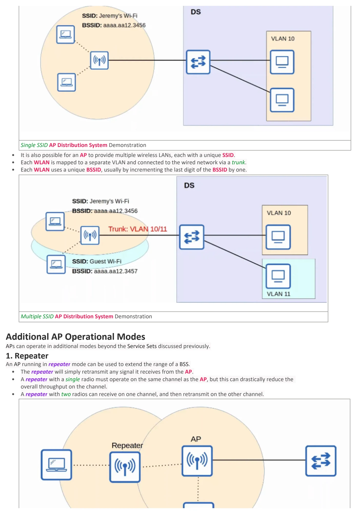
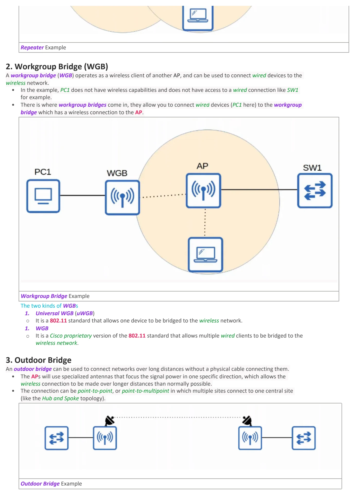

Day 55 / 63 · Architecture & wireless
Wireless Fundamentals
Study notes based primarily on Jeremy’s IT Lab CCNA learning videos. Credit to Jeremy’s IT Lab for the source lessons and diagrams.
Wireless Fundamentals
Download original PDF







Text view — Wireless Fundamentals
Extracted from the original export. Diagrams and some formatting appear in the notes above.
Day 55 - Wireless Fundamentals Wednesday, September 9, 2026 8:38 PM Wireless Fundamentals Info The standard that is used for Wireless LANs are defined IEEE 802.11. • The Wi-Fi is a trademark of the Wi-Fi Alliance, not directly connected to the previously mentioned 802.11. • The Wi-Fi Alliance tests and certifies equipment for 802.11 standards compliance interoperability with other devices. Wireless Networks Problems There are some problems with wireless networks that need to be dealt with. 1. Privacy • All devices within range receive all frames, like devices connected to an Ethernet hub. ○ This can lead to privacy problems within the LAN. ○ CSMA/CA (Carrier Sense Multiple Access with Collision Avoidance) is used to facilitate half-duplex communications ○ When using CSMA/CA, a device will wait for other devices to stop transmitting before it transmits data itself. CSMA/CA Demonstration CSMA/CD VS CSMA/CA ○ CSMA/CD is used in wired networks to detect and recover from collisions. ○ CSMA/CA is used in wireless networks to avoid collisions. 2. Regulations Wireless communications are regulated by various international and national bodies. 3. Signal Coverage Wireless signal coverage area must be considered. • Signal range. • Signal absorption, reflection, refraction, diffraction, and scattering. 1. Absorption § This happens when a wireless signal passes through a material and is converted into heat, weakening the original signal. 2. Reflection § This happens a signal bounces off of a material, of example metal. § An example of reflection happens when you find that your Wi-Fi reception to be poor inside of elevators. This happens because the signal bounces of the metal and very little penetrates into the elevator. 3. Refraction § This happens when a wave is bent when entering a medium where the signal travels at a different speed. 4. Diffraction § This happens when a wave encounters an obstacle and travels around it. 5. Scattering § This happens when a material causes a signal to scatter in all directions. 4. Interference • Other devices using the same wireless channels can cause interference. ○ For example, a wireless LAN in your neighbor’s house/apartment. Radio Frequency Wireless signals are basically electromagnetic fields which propagate out as waves. • Electromagnetic waves can measured in multiple ways for example: 1. Amplitude § It means the maximum strength of the electric and magnetic fields. 2. Frequency § It measures the number of up/down cycles per a given unit of time. § The most common measurement of frequency is hertz. □ Hz (Hertz) = cycles per second □ KHz (Kilohertz) = 1,000 cycles per second □ MHz (Kilohertz) = 1,000,000 cycles per second □ GHz (Kilohertz) = 1,000,000,000 cycles per second □ THz (Kilohertz) = 1,000,000,000,000 cycles per second 3. Period § It represents the amount of time for one cycle to be done. Frequency Demonstration Period Demonstration Wireless signals use radio frequency ranges in the Ultra high frequency and Super high frequency range. Radio Frequency - Bands Wi-Fi uses two main bands (frequency ranges): 1. 2.4 GHz band 2. 5 GHz band Band information ○ The 2.4 GHz band typically provides further reach in open space and better penetration of obstacles such as walls. ○ However, more devices tend to use the 2.4 GHz band so interference can be a bigger problem compared to the 5 GHz band. ○ Wi-Fi 6 (802.11ax) has expanded the spectrum to include a band in the 6 GHz range. Radio Frequency - Channels Each band is divided up into multiple ‘channels’. • Devices are configured to transmit and receive traffic on one (or more) of these channels. • In small wireless LANs with only a single AP, you can use any channel. • However, in larger WLANs with multiple APs, it’s important that adjacent APs don’t use overlapping channels in order to avoid interference. • The 2.4 GHz band is split up into multiple channels ○ In this band, it is recommended to use channels 1, 6, 11. ○ When using channels 1, 6, 11, you can place APs in a ‘honeycomb’ pattern to provide complete coverage of an area without interference between channels. • The 5 GHz band consists of non-overlapping channels, so it is much easier to avoid interference between adjacent APs. Radio Frequencies - 802.11 Standards Standard Frequencies Max Data Rate Alternate Name 802.11 2.4 GHz 2 Mbps --- 802.11b 2.4 GHz 11 Mbps --- 802.11a 5 GHz 54 Mbps --- 802.11g 2.4 GHz 54 Mbps --- 802.11n 2.4 / 5 GHz 600 Mbps Wi-Fi 4 High Throughput (HT) Wi-Fi 802.11ac 5 GHz 6.93 Gbps Wi-Fi 5 Very High Throughput (VHT) Wi-Fi 802.11ax 2.4 / 5 / 6 GHz 4 x 802.11ac Wi-Fi 6 (4 x 6.93) Service Sets 802.11 defines different kinds of service sets which are groups of wireless network devices. • There are three main types: 1. Independant 2. Infrastructure 3. Mesh • All devices in a service set share the same Service Set Identifier (SSID). ○ The SSID is a human-readable name which identifies the service set. ○ The SSID does not have to be unique 1. IBSS An Independent Basic Service Set (IBSS) is a wireless network in which two or more wireless devices connect directly without using an Access Point (AP). • Also called an ad-hoc network. • Can be used for file transfers. IBSS Example Network 2. BSS A Basic Service Set (BSS) is a kind of Infrastructure Service Set in which clients connect to each other via an AP, but not directly to each other. • A Basic Service Set ID (BSSID) is used to uniquely identify the AP. ○ The BSSID is the MAC address of the AP’s radio. ○ Other APs can use the same SSID, but not the same BSSID. • The area around an AP where its signal is unable is called a Basic Service Area (BSA) • (Clients must communicate with each other via the AP, not directly with each other.) SSID vs BSSID ○ APs in a network can use the same SSID (Service Set Identifier) ○ However, they cannot use the same BSSID (Basic Service Set ID) as it is unique for each device. • Wireless devices request to associate with the BSS. • Wireless devices that have associated with the BSS are called ‘clients’ or ‘stations’ BSS Demonstration 3. ESS An Extended Service Set (ESS) is used to create larger wireless LANs beyond the range of a AP. • APs with their own BSSs are connected by a wired network. ○ Each BSS uses the same SSID. ○ Each BSS has a unique BSSID. ○ Each BSS uses a different channel to avoid interference. • ESS provides a feature called roaming, where clients can pass between APs without having to reconnect, providing a seamless Wi-Fi experience when moving between APs. ESS Demonstration 4. MBSS A Mesh Based Service Set (MBSS) can be used in situations where it’s difficult to run an Ethernet connection to AP. • Mesh APs use two radios: ○ One to provide a BSS to wireless clients ○ One to form a ‘backhaul network’ which is used to bridge traffic from AP to AP. • At least one AP is connected to the wired network, and it is called the Root Access Point (RAP). • The other APs are called Mesh Access Points (MAPs). • A protocol is used to determine the best path through the mesh (similar to dynamic routing protocols) MBSS Demonstration Distribution System Most wireless networks aren’t standalone networks. Rather, they are a way for wireless clients to connect to the wired network infrastructure. • In 802.11, the upstream wired network is called the Distribution System (DS). • Each wireless BSS or ESS is mapped to a VLAN in a wired network. Single SSID AP Distribution System Demonstration • It is also possible for an AP to provide multiple wireless LANs, each with a unique SSID. • Each WLAN is mapped to a separate VLAN and connected to the wired network via a trunk. • Each WLAN uses a unique BSSID, usually by incrementing the last digit of the BSSID by one. Multiple SSID AP Distribution System Demonstration Additional AP Operational Modes APs can operate in additional modes beyond the Service Sets discussed previously. 1. Repeater An AP running in repeater mode can be used to extend the range of a BSS. • The repeater will simply retransmit any signal it receives from the AP. • A repeater with a single radio must operate on the same channel as the AP, but this can drastically reduce the overall throughput on the channel. • A repeater with two radios can receive on one channel, and then retransmit on the other channel. Repeater Example 2. Workgroup Bridge (WGB) A workgroup bridge (WGB) operates as a wireless client of another AP, and can be used to connect wired devices to the wireless network. • In the example, PC1 does not have wireless capabilities and does not have access to a wired connection like SW1 for example. • There is where workgroup bridges come in, they allow you to connect wired devices (PC1 here) to the workgroup bridge which has a wireless connection to the AP. Workgroup Bridge Example The two kinds of WGBs 1. Universal WGB (uWGB) ○ It is a 802.11 standard that allows one device to be bridged to the wireless network. 1. WGB ○ It is a Cisco proprietary version of the 802.11 standard that allows multiple wired clients to be bridged to the wireless network. 3. Outdoor Bridge An outdoor bridge can be used to connect networks over long distances without a physical cable connecting them. • The APs will use specialized antennas that focus the signal power in one specific direction, which allows the wireless connection to be made over longer distances than normally possible. • The connection can be point-to-point, or point-to-multipoint in which multiple sites connect to one central site (like the Hub and Spoke topology). Outdoor Bridge Example Day 55 - Wireless Fundamentals Wednesday, September 9, 2026 8:38 PM Wireless Fundamentals Info The standard that is used for Wireless LANs are defined IEEE 802.11. • The Wi-Fi is a trademark of the Wi-Fi Alliance, not directly connected to the previously mentioned 802.11. • The Wi-Fi Alliance tests and certifies equipment for 802.11 standards compliance interoperability with other devices. Wireless Networks Problems There are some problems with wireless networks that need to be dealt with. 1. Privacy • All devices within range receive all frames, like devices connected to an Ethernet hub. ○ This can lead to privacy problems within the LAN. ○ CSMA/CA (Carrier Sense Multiple Access with Collision Avoidance) is used to facilitate half-duplex communications ○ When using CSMA/CA, a device will wait for other devices to stop transmitting before it transmits data itself. CSMA/CA Demonstration CSMA/CD VS CSMA/CA ○ CSMA/CD is used in wired networks to detect and recover from collisions. ○ CSMA/CA is used in wireless networks to avoid collisions. 2. Regulations Wireless communications are regulated by various international and national bodies. 3. Signal Coverage Wireless signal coverage area must be considered. • Signal range. • Signal absorption, reflection, refraction, diffraction, and scattering. 1. Absorption § This happens when a wireless signal passes through a material and is converted into heat, weakening the original signal. 2. Reflection § This happens a signal bounces off of a material, of example metal. § An example of reflection happens when you find that your Wi-Fi reception to be poor inside of elevators. This happens because the signal bounces of the metal and very little penetrates into the elevator. 3. Refraction § This happens when a wave is bent when entering a medium where the signal travels at a different speed. 4. Diffraction § This happens when a wave encounters an obstacle and travels around it. 5. Scattering § This happens when a material causes a signal to scatter in all directions. 4. Interference • Other devices using the same wireless channels can cause interference. ○ For example, a wireless LAN in your neighbor’s house/apartment. Radio Frequency Wireless signals are basically electromagnetic fields which propagate out as waves. • Electromagnetic waves can measured in multiple ways for example: 1. Amplitude § It means the maximum strength of the electric and magnetic fields. 2. Frequency § It measures the number of up/down cycles per a given unit of time. § The most common measurement of frequency is hertz. □ Hz (Hertz) = cycles per second □ KHz (Kilohertz) = 1,000 cycles per second □ MHz (Kilohertz) = 1,000,000 cycles per second □ GHz (Kilohertz) = 1,000,000,000 cycles per second □ THz (Kilohertz) = 1,000,000,000,000 cycles per second 3. Period § It represents the amount of time for one cycle to be done. Frequency Demonstration Period Demonstration Wireless signals use radio frequency ranges in the Ultra high frequency and Super high frequency range. Radio Frequency - Bands Wi-Fi uses two main bands (frequency ranges): 1. 2.4 GHz band 2. 5 GHz band Band information ○ The 2.4 GHz band typically provides further reach in open space and better penetration of obstacles such as walls. ○ However, more devices tend to use the 2.4 GHz band so interference can be a bigger problem compared to the 5 GHz band. ○ Wi-Fi 6 (802.11ax) has expanded the spectrum to include a band in the 6 GHz range. Radio Frequency - Channels Each band is divided up into multiple ‘channels’. • Devices are configured to transmit and receive traffic on one (or more) of these channels. • In small wireless LANs with only a single AP, you can use any channel. • However, in larger WLANs with multiple APs, it’s important that adjacent APs don’t use overlapping channels in order to avoid interference. • The 2.4 GHz band is split up into multiple channels ○ In this band, it is recommended to use channels 1, 6, 11. ○ When using channels 1, 6, 11, you can place APs in a ‘honeycomb’ pattern to provide complete coverage of an area without interference between channels. • The 5 GHz band consists of non-overlapping channels, so it is much easier to avoid interference between adjacent APs. Radio Frequencies - 802.11 Standards Standard Frequencies Max Data Rate Alternate Name 802.11 2.4 GHz 2 Mbps --- 802.11b 2.4 GHz 11 Mbps --- 802.11a 5 GHz 54 Mbps --- 802.11g 2.4 GHz 54 Mbps --- 802.11n 2.4 / 5 GHz 600 Mbps Wi-Fi 4 High Throughput (HT) Wi-Fi 802.11ac 5 GHz 6.93 Gbps Wi-Fi 5 Very High Throughput (VHT) Wi-Fi 802.11ax 2.4 / 5 / 6 GHz 4 x 802.11ac Wi-Fi 6 (4 x 6.93) Service Sets 802.11 defines different kinds of service sets which are groups of wireless network devices. • There are three main types: 1. Independant 2. Infrastructure 3. Mesh • All devices in a service set share the same Service Set Identifier (SSID). ○ The SSID is a human-readable name which identifies the service set. ○ The SSID does not have to be unique 1. IBSS An Independent Basic Service Set (IBSS) is a wireless network in which two or more wireless devices connect directly without using an Access Point (AP). • Also called an ad-hoc network. • Can be used for file transfers. IBSS Example Network 2. BSS A Basic Service Set (BSS) is a kind of Infrastructure Service Set in which clients connect to each other via an AP, but not directly to each other. • A Basic Service Set ID (BSSID) is used to uniquely identify the AP. ○ The BSSID is the MAC address of the AP’s radio. ○ Other APs can use the same SSID, but not the same BSSID. • The area around an AP where its signal is unable is called a Basic Service Area (BSA) • (Clients must communicate with each other via the AP, not directly with each other.) SSID vs BSSID ○ APs in a network can use the same SSID (Service Set Identifier) ○ However, they cannot use the same BSSID (Basic Service Set ID) as it is unique for each device. • Wireless devices request to associate with the BSS. • Wireless devices that have associated with the BSS are called ‘clients’ or ‘stations’ BSS Demonstration 3. ESS An Extended Service Set (ESS) is used to create larger wireless LANs beyond the range of a AP. • APs with their own BSSs are connected by a wired network. ○ Each BSS uses the same SSID. ○ Each BSS has a unique BSSID. ○ Each BSS uses a different channel to avoid interference. • ESS provides a feature called roaming, where clients can pass between APs without having to reconnect, providing a seamless Wi-Fi experience when moving between APs. ESS Demonstration 4. MBSS A Mesh Based Service Set (MBSS) can be used in situations where it’s difficult to run an Ethernet connection to AP. • Mesh APs use two radios: ○ One to provide a BSS to wireless clients ○ One to form a ‘backhaul network’ which is used to bridge traffic from AP to AP. • At least one AP is connected to the wired network, and it is called the Root Access Point (RAP). • The other APs are called Mesh Access Points (MAPs). • A protocol is used to determine the best path through the mesh (similar to dynamic routing protocols) MBSS Demonstration Distribution System Most wireless networks aren’t standalone networks. Rather, they are a way for wireless clients to connect to the wired network infrastructure. • In 802.11, the upstream wired network is called the Distribution System (DS). • Each wireless BSS or ESS is mapped to a VLAN in a wired network. Single SSID AP Distribution System Demonstration • It is also possible for an AP to provide multiple wireless LANs, each with a unique SSID. • Each WLAN is mapped to a separate VLAN and connected to the wired network via a trunk. • Each WLAN uses a unique BSSID, usually by incrementing the last digit of the BSSID by one. Multiple SSID AP Distribution System Demonstration Additional AP Operational Modes APs can operate in additional modes beyond the Service Sets discussed previously. 1. Repeater An AP running in repeater mode can be used to extend the range of a BSS. • The repeater will simply retransmit any signal it receives from the AP. • A repeater with a single radio must operate on the same channel as the AP, but this can drastically reduce the overall throughput on the channel. • A repeater with two radios can receive on one channel, and then retransmit on the other channel. Repeater Example 2. Workgroup Bridge (WGB) A workgroup bridge (WGB) operates as a wireless client of another AP, and can be used to connect wired devices to the wireless network. • In the example, PC1 does not have wireless capabilities and does not have access to a wired connection like SW1 for example. • There is where workgroup bridges come in, they allow you to connect wired devices (PC1 here) to the workgroup bridge which has a wireless connection to the AP. Workgroup Bridge Example The two kinds of WGBs 1. Universal WGB (uWGB) ○ It is a 802.11 standard that allows one device to be bridged to the wireless network. 1. WGB ○ It is a Cisco proprietary version of the 802.11 standard that allows multiple wired clients to be bridged to the wireless network. 3. Outdoor Bridge An outdoor bridge can be used to connect networks over long distances without a physical cable connecting them. • The APs will use specialized antennas that focus the signal power in one specific direction, which allows the wireless connection to be made over longer distances than normally possible. • The connection can be point-to-point, or point-to-multipoint in which multiple sites connect to one central site (like the Hub and Spoke topology). Outdoor Bridge Example Day 55 - Wireless Fundamentals Wednesday, September 9, 2026 8:38 PM Wireless Fundamentals Info The standard that is used for Wireless LANs are defined IEEE 802.11. • The Wi-Fi is a trademark of the Wi-Fi Alliance, not directly connected to the previously mentioned 802.11. • The Wi-Fi Alliance tests and certifies equipment for 802.11 standards compliance interoperability with other devices. Wireless Networks Problems There are some problems with wireless networks that need to be dealt with. 1. Privacy • All devices within range receive all frames, like devices connected to an Ethernet hub. ○ This can lead to privacy problems within the LAN. ○ CSMA/CA (Carrier Sense Multiple Access with Collision Avoidance) is used to facilitate half-duplex communications ○ When using CSMA/CA, a device will wait for other devices to stop transmitting before it transmits data itself. CSMA/CA Demonstration CSMA/CD VS CSMA/CA ○ CSMA/CD is used in wired networks to detect and recover from collisions. ○ CSMA/CA is used in wireless networks to avoid collisions. 2. Regulations Wireless communications are regulated by various international and national bodies. 3. Signal Coverage Wireless signal coverage area must be considered. • Signal range. • Signal absorption, reflection, refraction, diffraction, and scattering. 1. Absorption § This happens when a wireless signal passes through a material and is converted into heat, weakening the original signal. 2. Reflection § This happens a signal bounces off of a material, of example metal. § An example of reflection happens when you find that your Wi-Fi reception to be poor inside of elevators. This happens because the signal bounces of the metal and very little penetrates into the elevator. 3. Refraction § This happens when a wave is bent when entering a medium where the signal travels at a different speed. 4. Diffraction § This happens when a wave encounters an obstacle and travels around it. 5. Scattering § This happens when a material causes a signal to scatter in all directions. 4. Interference • Other devices using the same wireless channels can cause interference. ○ For example, a wireless LAN in your neighbor’s house/apartment. Radio Frequency Wireless signals are basically electromagnetic fields which propagate out as waves. • Electromagnetic waves can measured in multiple ways for example: 1. Amplitude § It means the maximum strength of the electric and magnetic fields. 2. Frequency § It measures the number of up/down cycles per a given unit of time. § The most common measurement of frequency is hertz. □ Hz (Hertz) = cycles per second □ KHz (Kilohertz) = 1,000 cycles per second □ MHz (Kilohertz) = 1,000,000 cycles per second □ GHz (Kilohertz) = 1,000,000,000 cycles per second □ THz (Kilohertz) = 1,000,000,000,000 cycles per second 3. Period § It represents the amount of time for one cycle to be done. Frequency Demonstration Period Demonstration Wireless signals use radio frequency ranges in the Ultra high frequency and Super high frequency range. Radio Frequency - Bands Wi-Fi uses two main bands (frequency ranges): 1. 2.4 GHz band 2. 5 GHz band Band information ○ The 2.4 GHz band typically provides further reach in open space and better penetration of obstacles such as walls. ○ However, more devices tend to use the 2.4 GHz band so interference can be a bigger problem compared to the 5 GHz band. ○ Wi-Fi 6 (802.11ax) has expanded the spectrum to include a band in the 6 GHz range. Radio Frequency - Channels Each band is divided up into multiple ‘channels’. • Devices are configured to transmit and receive traffic on one (or more) of these channels. • In small wireless LANs with only a single AP, you can use any channel. • However, in larger WLANs with multiple APs, it’s important that adjacent APs don’t use overlapping channels in order to avoid interference. • The 2.4 GHz band is split up into multiple channels ○ In this band, it is recommended to use channels 1, 6, 11. ○ When using channels 1, 6, 11, you can place APs in a ‘honeycomb’ pattern to provide complete coverage of an area without interference between channels. • The 5 GHz band consists of non-overlapping channels, so it is much easier to avoid interference between adjacent APs. Radio Frequencies - 802.11 Standards Standard Frequencies Max Data Rate Alternate Name 802.11 2.4 GHz 2 Mbps --- 802.11b 2.4 GHz 11 Mbps --- 802.11a 5 GHz 54 Mbps --- 802.11g 2.4 GHz 54 Mbps --- 802.11n 2.4 / 5 GHz 600 Mbps Wi-Fi 4 High Throughput (HT) Wi-Fi 802.11ac 5 GHz 6.93 Gbps Wi-Fi 5 Very High Throughput (VHT) Wi-Fi 802.11ax 2.4 / 5 / 6 GHz 4 x 802.11ac Wi-Fi 6 (4 x 6.93) Service Sets 802.11 defines different kinds of service sets which are groups of wireless network devices. • There are three main types: 1. Independant 2. Infrastructure 3. Mesh • All devices in a service set share the same Service Set Identifier (SSID). ○ The SSID is a human-readable name which identifies the service set. ○ The SSID does not have to be unique 1. IBSS An Independent Basic Service Set (IBSS) is a wireless network in which two or more wireless devices connect directly without using an Access Point (AP). • Also called an ad-hoc network. • Can be used for file transfers. IBSS Example Network 2. BSS A Basic Service Set (BSS) is a kind of Infrastructure Service Set in which clients connect to each other via an AP, but not directly to each other. • A Basic Service Set ID (BSSID) is used to uniquely identify the AP. ○ The BSSID is the MAC address of the AP’s radio. ○ Other APs can use the same SSID, but not the same BSSID. • The area around an AP where its signal is unable is called a Basic Service Area (BSA) • (Clients must communicate with each other via the AP, not directly with each other.) SSID vs BSSID ○ APs in a network can use the same SSID (Service Set Identifier) ○ However, they cannot use the same BSSID (Basic Service Set ID) as it is unique for each device. • Wireless devices request to associate with the BSS. • Wireless devices that have associated with the BSS are called ‘clients’ or ‘stations’ BSS Demonstration 3. ESS An Extended Service Set (ESS) is used to create larger wireless LANs beyond the range of a AP. • APs with their own BSSs are connected by a wired network. ○ Each BSS uses the same SSID. ○ Each BSS has a unique BSSID. ○ Each BSS uses a different channel to avoid interference. • ESS provides a feature called roaming, where clients can pass between APs without having to reconnect, providing a seamless Wi-Fi experience when moving between APs. ESS Demonstration 4. MBSS A Mesh Based Service Set (MBSS) can be used in situations where it’s difficult to run an Ethernet connection to AP. • Mesh APs use two radios: ○ One to provide a BSS to wireless clients ○ One to form a ‘backhaul network’ which is used to bridge traffic from AP to AP. • At least one AP is connected to the wired network, and it is called the Root Access Point (RAP). • The other APs are called Mesh Access Points (MAPs). • A protocol is used to determine the best path through the mesh (similar to dynamic routing protocols) MBSS Demonstration Distribution System Most wireless networks aren’t standalone networks. Rather, they are a way for wireless clients to connect to the wired network infrastructure. • In 802.11, the upstream wired network is called the Distribution System (DS). • Each wireless BSS or ESS is mapped to a VLAN in a wired network. Single SSID AP Distribution System Demonstration • It is also possible for an AP to provide multiple wireless LANs, each with a unique SSID. • Each WLAN is mapped to a separate VLAN and connected to the wired network via a trunk. • Each WLAN uses a unique BSSID, usually by incrementing the last digit of the BSSID by one. Multiple SSID AP Distribution System Demonstration Additional AP Operational Modes APs can operate in additional modes beyond the Service Sets discussed previously. 1. Repeater An AP running in repeater mode can be used to extend the range of a BSS. • The repeater will simply retransmit any signal it receives from the AP. • A repeater with a single radio must operate on the same channel as the AP, but this can drastically reduce the overall throughput on the channel. • A repeater with two radios can receive on one channel, and then retransmit on the other channel. Repeater Example 2. Workgroup Bridge (WGB) A workgroup bridge (WGB) operates as a wireless client of another AP, and can be used to connect wired devices to the wireless network. • In the example, PC1 does not have wireless capabilities and does not have access to a wired connection like SW1 for example. • There is where workgroup bridges come in, they allow you to connect wired devices (PC1 here) to the workgroup bridge which has a wireless connection to the AP. Workgroup Bridge Example The two kinds of WGBs 1. Universal WGB (uWGB) ○ It is a 802.11 standard that allows one device to be bridged to the wireless network. 1. WGB ○ It is a Cisco proprietary version of the 802.11 standard that allows multiple wired clients to be bridged to the wireless network. 3. Outdoor Bridge An outdoor bridge can be used to connect networks over long distances without a physical cable connecting them. • The APs will use specialized antennas that focus the signal power in one specific direction, which allows the wireless connection to be made over longer distances than normally possible. • The connection can be point-to-point, or point-to-multipoint in which multiple sites connect to one central site (like the Hub and Spoke topology). Outdoor Bridge Example Day 55 - Wireless Fundamentals Wednesday, September 9, 2026 8:38 PM Wireless Fundamentals Info The standard that is used for Wireless LANs are defined IEEE 802.11. • The Wi-Fi is a trademark of the Wi-Fi Alliance, not directly connected to the previously mentioned 802.11. • The Wi-Fi Alliance tests and certifies equipment for 802.11 standards compliance interoperability with other devices. Wireless Networks Problems There are some problems with wireless networks that need to be dealt with. 1. Privacy • All devices within range receive all frames, like devices connected to an Ethernet hub. ○ This can lead to privacy problems within the LAN. ○ CSMA/CA (Carrier Sense Multiple Access with Collision Avoidance) is used to facilitate half-duplex communications ○ When using CSMA/CA, a device will wait for other devices to stop transmitting before it transmits data itself. CSMA/CA Demonstration CSMA/CD VS CSMA/CA ○ CSMA/CD is used in wired networks to detect and recover from collisions. ○ CSMA/CA is used in wireless networks to avoid collisions. 2. Regulations Wireless communications are regulated by various international and national bodies. 3. Signal Coverage Wireless signal coverage area must be considered. • Signal range. • Signal absorption, reflection, refraction, diffraction, and scattering. 1. Absorption § This happens when a wireless signal passes through a material and is converted into heat, weakening the original signal. 2. Reflection § This happens a signal bounces off of a material, of example metal. § An example of reflection happens when you find that your Wi-Fi reception to be poor inside of elevators. This happens because the signal bounces of the metal and very little penetrates into the elevator. 3. Refraction § This happens when a wave is bent when entering a medium where the signal travels at a different speed. 4. Diffraction § This happens when a wave encounters an obstacle and travels around it. 5. Scattering § This happens when a material causes a signal to scatter in all directions. 4. Interference • Other devices using the same wireless channels can cause interference. ○ For example, a wireless LAN in your neighbor’s house/apartment. Radio Frequency Wireless signals are basically electromagnetic fields which propagate out as waves. • Electromagnetic waves can measured in multiple ways for example: 1. Amplitude § It means the maximum strength of the electric and magnetic fields. 2. Frequency § It measures the number of up/down cycles per a given unit of time. § The most common measurement of frequency is hertz. □ Hz (Hertz) = cycles per second □ KHz (Kilohertz) = 1,000 cycles per second □ MHz (Kilohertz) = 1,000,000 cycles per second □ GHz (Kilohertz) = 1,000,000,000 cycles per second □ THz (Kilohertz) = 1,000,000,000,000 cycles per second 3. Period § It represents the amount of time for one cycle to be done. Frequency Demonstration Period Demonstration Wireless signals use radio frequency ranges in the Ultra high frequency and Super high frequency range. Radio Frequency - Bands Wi-Fi uses two main bands (frequency ranges): 1. 2.4 GHz band 2. 5 GHz band Band information ○ The 2.4 GHz band typically provides further reach in open space and better penetration of obstacles such as walls. ○ However, more devices tend to use the 2.4 GHz band so interference can be a bigger problem compared to the 5 GHz band. ○ Wi-Fi 6 (802.11ax) has expanded the spectrum to include a band in the 6 GHz range. Radio Frequency - Channels Each band is divided up into multiple ‘channels’. • Devices are configured to transmit and receive traffic on one (or more) of these channels. • In small wireless LANs with only a single AP, you can use any channel. • However, in larger WLANs with multiple APs, it’s important that adjacent APs don’t use overlapping channels in order to avoid interference. • The 2.4 GHz band is split up into multiple channels ○ In this band, it is recommended to use channels 1, 6, 11. ○ When using channels 1, 6, 11, you can place APs in a ‘honeycomb’ pattern to provide complete coverage of an area without interference between channels. • The 5 GHz band consists of non-overlapping channels, so it is much easier to avoid interference between adjacent APs. Radio Frequencies - 802.11 Standards Standard Frequencies Max Data Rate Alternate Name 802.11 2.4 GHz 2 Mbps --- 802.11b 2.4 GHz 11 Mbps --- 802.11a 5 GHz 54 Mbps --- 802.11g 2.4 GHz 54 Mbps --- 802.11n 2.4 / 5 GHz 600 Mbps Wi-Fi 4 High Throughput (HT) Wi-Fi 802.11ac 5 GHz 6.93 Gbps Wi-Fi 5 Very High Throughput (VHT) Wi-Fi 802.11ax 2.4 / 5 / 6 GHz 4 x 802.11ac Wi-Fi 6 (4 x 6.93) Service Sets 802.11 defines different kinds of service sets which are groups of wireless network devices. • There are three main types: 1. Independant 2. Infrastructure 3. Mesh • All devices in a service set share the same Service Set Identifier (SSID). ○ The SSID is a human-readable name which identifies the service set. ○ The SSID does not have to be unique 1. IBSS An Independent Basic Service Set (IBSS) is a wireless network in which two or more wireless devices connect directly without using an Access Point (AP). • Also called an ad-hoc network. • Can be used for file transfers. IBSS Example Network 2. BSS A Basic Service Set (BSS) is a kind of Infrastructure Service Set in which clients connect to each other via an AP, but not directly to each other. • A Basic Service Set ID (BSSID) is used to uniquely identify the AP. ○ The BSSID is the MAC address of the AP’s radio. ○ Other APs can use the same SSID, but not the same BSSID. • The area around an AP where its signal is unable is called a Basic Service Area (BSA) • (Clients must communicate with each other via the AP, not directly with each other.) SSID vs BSSID ○ APs in a network can use the same SSID (Service Set Identifier) ○ However, they cannot use the same BSSID (Basic Service Set ID) as it is unique for each device. • Wireless devices request to associate with the BSS. • Wireless devices that have associated with the BSS are called ‘clients’ or ‘stations’ BSS Demonstration 3. ESS An Extended Service Set (ESS) is used to create larger wireless LANs beyond the range of a AP. • APs with their own BSSs are connected by a wired network. ○ Each BSS uses the same SSID. ○ Each BSS has a unique BSSID. ○ Each BSS uses a different channel to avoid interference. • ESS provides a feature called roaming, where clients can pass between APs without having to reconnect, providing a seamless Wi-Fi experience when moving between APs. ESS Demonstration 4. MBSS A Mesh Based Service Set (MBSS) can be used in situations where it’s difficult to run an Ethernet connection to AP. • Mesh APs use two radios: ○ One to provide a BSS to wireless clients ○ One to form a ‘backhaul network’ which is used to bridge traffic from AP to AP. • At least one AP is connected to the wired network, and it is called the Root Access Point (RAP). • The other APs are called Mesh Access Points (MAPs). • A protocol is used to determine the best path through the mesh (similar to dynamic routing protocols) MBSS Demonstration Distribution System Most wireless networks aren’t standalone networks. Rather, they are a way for wireless clients to connect to the wired network infrastructure. • In 802.11, the upstream wired network is called the Distribution System (DS). • Each wireless BSS or ESS is mapped to a VLAN in a wired network. Single SSID AP Distribution System Demonstration • It is also possible for an AP to provide multiple wireless LANs, each with a unique SSID. • Each WLAN is mapped to a separate VLAN and connected to the wired network via a trunk. • Each WLAN uses a unique BSSID, usually by incrementing the last digit of the BSSID by one. Multiple SSID AP Distribution System Demonstration Additional AP Operational Modes APs can operate in additional modes beyond the Service Sets discussed previously. 1. Repeater An AP running in repeater mode can be used to extend the range of a BSS. • The repeater will simply retransmit any signal it receives from the AP. • A repeater with a single radio must operate on the same channel as the AP, but this can drastically reduce the overall throughput on the channel. • A repeater with two radios can receive on one channel, and then retransmit on the other channel. Repeater Example 2. Workgroup Bridge (WGB) A workgroup bridge (WGB) operates as a wireless client of another AP, and can be used to connect wired devices to the wireless network. • In the example, PC1 does not have wireless capabilities and does not have access to a wired connection like SW1 for example. • There is where workgroup bridges come in, they allow you to connect wired devices (PC1 here) to the workgroup bridge which has a wireless connection to the AP. Workgroup Bridge Example The two kinds of WGBs 1. Universal WGB (uWGB) ○ It is a 802.11 standard that allows one device to be bridged to the wireless network. 1. WGB ○ It is a Cisco proprietary version of the 802.11 standard that allows multiple wired clients to be bridged to the wireless network. 3. Outdoor Bridge An outdoor bridge can be used to connect networks over long distances without a physical cable connecting them. • The APs will use specialized antennas that focus the signal power in one specific direction, which allows the wireless connection to be made over longer distances than normally possible. • The connection can be point-to-point, or point-to-multipoint in which multiple sites connect to one central site (like the Hub and Spoke topology). Outdoor Bridge Example Day 55 - Wireless Fundamentals Wednesday, September 9, 2026 8:38 PM Wireless Fundamentals Info The standard that is used for Wireless LANs are defined IEEE 802.11. • The Wi-Fi is a trademark of the Wi-Fi Alliance, not directly connected to the previously mentioned 802.11. • The Wi-Fi Alliance tests and certifies equipment for 802.11 standards compliance interoperability with other devices. Wireless Networks Problems There are some problems with wireless networks that need to be dealt with. 1. Privacy • All devices within range receive all frames, like devices connected to an Ethernet hub. ○ This can lead to privacy problems within the LAN. ○ CSMA/CA (Carrier Sense Multiple Access with Collision Avoidance) is used to facilitate half-duplex communications ○ When using CSMA/CA, a device will wait for other devices to stop transmitting before it transmits data itself. CSMA/CA Demonstration CSMA/CD VS CSMA/CA ○ CSMA/CD is used in wired networks to detect and recover from collisions. ○ CSMA/CA is used in wireless networks to avoid collisions. 2. Regulations Wireless communications are regulated by various international and national bodies. 3. Signal Coverage Wireless signal coverage area must be considered. • Signal range. • Signal absorption, reflection, refraction, diffraction, and scattering. 1. Absorption § This happens when a wireless signal passes through a material and is converted into heat, weakening the original signal. 2. Reflection § This happens a signal bounces off of a material, of example metal. § An example of reflection happens when you find that your Wi-Fi reception to be poor inside of elevators. This happens because the signal bounces of the metal and very little penetrates into the elevator. 3. Refraction § This happens when a wave is bent when entering a medium where the signal travels at a different speed. 4. Diffraction § This happens when a wave encounters an obstacle and travels around it. 5. Scattering § This happens when a material causes a signal to scatter in all directions. 4. Interference • Other devices using the same wireless channels can cause interference. ○ For example, a wireless LAN in your neighbor’s house/apartment. Radio Frequency Wireless signals are basically electromagnetic fields which propagate out as waves. • Electromagnetic waves can measured in multiple ways for example: 1. Amplitude § It means the maximum strength of the electric and magnetic fields. 2. Frequency § It measures the number of up/down cycles per a given unit of time. § The most common measurement of frequency is hertz. □ Hz (Hertz) = cycles per second □ KHz (Kilohertz) = 1,000 cycles per second □ MHz (Kilohertz) = 1,000,000 cycles per second □ GHz (Kilohertz) = 1,000,000,000 cycles per second □ THz (Kilohertz) = 1,000,000,000,000 cycles per second 3. Period § It represents the amount of time for one cycle to be done. Frequency Demonstration Period Demonstration Wireless signals use radio frequency ranges in the Ultra high frequency and Super high frequency range. Radio Frequency - Bands Wi-Fi uses two main bands (frequency ranges): 1. 2.4 GHz band 2. 5 GHz band Band information ○ The 2.4 GHz band typically provides further reach in open space and better penetration of obstacles such as walls. ○ However, more devices tend to use the 2.4 GHz band so interference can be a bigger problem compared to the 5 GHz band. ○ Wi-Fi 6 (802.11ax) has expanded the spectrum to include a band in the 6 GHz range. Radio Frequency - Channels Each band is divided up into multiple ‘channels’. • Devices are configured to transmit and receive traffic on one (or more) of these channels. • In small wireless LANs with only a single AP, you can use any channel. • However, in larger WLANs with multiple APs, it’s important that adjacent APs don’t use overlapping channels in order to avoid interference. • The 2.4 GHz band is split up into multiple channels ○ In this band, it is recommended to use channels 1, 6, 11. ○ When using channels 1, 6, 11, you can place APs in a ‘honeycomb’ pattern to provide complete coverage of an area without interference between channels. • The 5 GHz band consists of non-overlapping channels, so it is much easier to avoid interference between adjacent APs. Radio Frequencies - 802.11 Standards Standard Frequencies Max Data Rate Alternate Name 802.11 2.4 GHz 2 Mbps --- 802.11b 2.4 GHz 11 Mbps --- 802.11a 5 GHz 54 Mbps --- 802.11g 2.4 GHz 54 Mbps --- 802.11n 2.4 / 5 GHz 600 Mbps Wi-Fi 4 High Throughput (HT) Wi-Fi 802.11ac 5 GHz 6.93 Gbps Wi-Fi 5 Very High Throughput (VHT) Wi-Fi 802.11ax 2.4 / 5 / 6 GHz 4 x 802.11ac Wi-Fi 6 (4 x 6.93) Service Sets 802.11 defines different kinds of service sets which are groups of wireless network devices. • There are three main types: 1. Independant 2. Infrastructure 3. Mesh • All devices in a service set share the same Service Set Identifier (SSID). ○ The SSID is a human-readable name which identifies the service set. ○ The SSID does not have to be unique 1. IBSS An Independent Basic Service Set (IBSS) is a wireless network in which two or more wireless devices connect directly without using an Access Point (AP). • Also called an ad-hoc network. • Can be used for file transfers. IBSS Example Network 2. BSS A Basic Service Set (BSS) is a kind of Infrastructure Service Set in which clients connect to each other via an AP, but not directly to each other. • A Basic Service Set ID (BSSID) is used to uniquely identify the AP. ○ The BSSID is the MAC address of the AP’s radio. ○ Other APs can use the same SSID, but not the same BSSID. • The area around an AP where its signal is unable is called a Basic Service Area (BSA) • (Clients must communicate with each other via the AP, not directly with each other.) SSID vs BSSID ○ APs in a network can use the same SSID (Service Set Identifier) ○ However, they cannot use the same BSSID (Basic Service Set ID) as it is unique for each device. • Wireless devices request to associate with the BSS. • Wireless devices that have associated with the BSS are called ‘clients’ or ‘stations’ BSS Demonstration 3. ESS An Extended Service Set (ESS) is used to create larger wireless LANs beyond the range of a AP. • APs with their own BSSs are connected by a wired network. ○ Each BSS uses the same SSID. ○ Each BSS has a unique BSSID. ○ Each BSS uses a different channel to avoid interference. • ESS provides a feature called roaming, where clients can pass between APs without having to reconnect, providing a seamless Wi-Fi experience when moving between APs. ESS Demonstration 4. MBSS A Mesh Based Service Set (MBSS) can be used in situations where it’s difficult to run an Ethernet connection to AP. • Mesh APs use two radios: ○ One to provide a BSS to wireless clients ○ One to form a ‘backhaul network’ which is used to bridge traffic from AP to AP. • At least one AP is connected to the wired network, and it is called the Root Access Point (RAP). • The other APs are called Mesh Access Points (MAPs). • A protocol is used to determine the best path through the mesh (similar to dynamic routing protocols) MBSS Demonstration Distribution System Most wireless networks aren’t standalone networks. Rather, they are a way for wireless clients to connect to the wired network infrastructure. • In 802.11, the upstream wired network is called the Distribution System (DS). • Each wireless BSS or ESS is mapped to a VLAN in a wired network. Single SSID AP Distribution System Demonstration • It is also possible for an AP to provide multiple wireless LANs, each with a unique SSID. • Each WLAN is mapped to a separate VLAN and connected to the wired network via a trunk. • Each WLAN uses a unique BSSID, usually by incrementing the last digit of the BSSID by one. Multiple SSID AP Distribution System Demonstration Additional AP Operational Modes APs can operate in additional modes beyond the Service Sets discussed previously. 1. Repeater An AP running in repeater mode can be used to extend the range of a BSS. • The repeater will simply retransmit any signal it receives from the AP. • A repeater with a single radio must operate on the same channel as the AP, but this can drastically reduce the overall throughput on the channel. • A repeater with two radios can receive on one channel, and then retransmit on the other channel. Repeater Example 2. Workgroup Bridge (WGB) A workgroup bridge (WGB) operates as a wireless client of another AP, and can be used to connect wired devices to the wireless network. • In the example, PC1 does not have wireless capabilities and does not have access to a wired connection like SW1 for example. • There is where workgroup bridges come in, they allow you to connect wired devices (PC1 here) to the workgroup bridge which has a wireless connection to the AP. Workgroup Bridge Example The two kinds of WGBs 1. Universal WGB (uWGB) ○ It is a 802.11 standard that allows one device to be bridged to the wireless network. 1. WGB ○ It is a Cisco proprietary version of the 802.11 standard that allows multiple wired clients to be bridged to the wireless network. 3. Outdoor Bridge An outdoor bridge can be used to connect networks over long distances without a physical cable connecting them. • The APs will use specialized antennas that focus the signal power in one specific direction, which allows the wireless connection to be made over longer distances than normally possible. • The connection can be point-to-point, or point-to-multipoint in which multiple sites connect to one central site (like the Hub and Spoke topology). Outdoor Bridge Example Day 55 - Wireless Fundamentals Wednesday, September 9, 2026 8:38 PM Wireless Fundamentals Info The standard that is used for Wireless LANs are defined IEEE 802.11. • The Wi-Fi is a trademark of the Wi-Fi Alliance, not directly connected to the previously mentioned 802.11. • The Wi-Fi Alliance tests and certifies equipment for 802.11 standards compliance interoperability with other devices. Wireless Networks Problems There are some problems with wireless networks that need to be dealt with. 1. Privacy • All devices within range receive all frames, like devices connected to an Ethernet hub. ○ This can lead to privacy problems within the LAN. ○ CSMA/CA (Carrier Sense Multiple Access with Collision Avoidance) is used to facilitate half-duplex communications ○ When using CSMA/CA, a device will wait for other devices to stop transmitting before it transmits data itself. CSMA/CA Demonstration CSMA/CD VS CSMA/CA ○ CSMA/CD is used in wired networks to detect and recover from collisions. ○ CSMA/CA is used in wireless networks to avoid collisions. 2. Regulations Wireless communications are regulated by various international and national bodies. 3. Signal Coverage Wireless signal coverage area must be considered. • Signal range. • Signal absorption, reflection, refraction, diffraction, and scattering. 1. Absorption § This happens when a wireless signal passes through a material and is converted into heat, weakening the original signal. 2. Reflection § This happens a signal bounces off of a material, of example metal. § An example of reflection happens when you find that your Wi-Fi reception to be poor inside of elevators. This happens because the signal bounces of the metal and very little penetrates into the elevator. 3. Refraction § This happens when a wave is bent when entering a medium where the signal travels at a different speed. 4. Diffraction § This happens when a wave encounters an obstacle and travels around it. 5. Scattering § This happens when a material causes a signal to scatter in all directions. 4. Interference • Other devices using the same wireless channels can cause interference. ○ For example, a wireless LAN in your neighbor’s house/apartment. Radio Frequency Wireless signals are basically electromagnetic fields which propagate out as waves. • Electromagnetic waves can measured in multiple ways for example: 1. Amplitude § It means the maximum strength of the electric and magnetic fields. 2. Frequency § It measures the number of up/down cycles per a given unit of time. § The most common measurement of frequency is hertz. □ Hz (Hertz) = cycles per second □ KHz (Kilohertz) = 1,000 cycles per second □ MHz (Kilohertz) = 1,000,000 cycles per second □ GHz (Kilohertz) = 1,000,000,000 cycles per second □ THz (Kilohertz) = 1,000,000,000,000 cycles per second 3. Period § It represents the amount of time for one cycle to be done. Frequency Demonstration Period Demonstration Wireless signals use radio frequency ranges in the Ultra high frequency and Super high frequency range. Radio Frequency - Bands Wi-Fi uses two main bands (frequency ranges): 1. 2.4 GHz band 2. 5 GHz band Band information ○ The 2.4 GHz band typically provides further reach in open space and better penetration of obstacles such as walls. ○ However, more devices tend to use the 2.4 GHz band so interference can be a bigger problem compared to the 5 GHz band. ○ Wi-Fi 6 (802.11ax) has expanded the spectrum to include a band in the 6 GHz range. Radio Frequency - Channels Each band is divided up into multiple ‘channels’. • Devices are configured to transmit and receive traffic on one (or more) of these channels. • In small wireless LANs with only a single AP, you can use any channel. • However, in larger WLANs with multiple APs, it’s important that adjacent APs don’t use overlapping channels in order to avoid interference. • The 2.4 GHz band is split up into multiple channels ○ In this band, it is recommended to use channels 1, 6, 11. ○ When using channels 1, 6, 11, you can place APs in a ‘honeycomb’ pattern to provide complete coverage of an area without interference between channels. • The 5 GHz band consists of non-overlapping channels, so it is much easier to avoid interference between adjacent APs. Radio Frequencies - 802.11 Standards Standard Frequencies Max Data Rate Alternate Name 802.11 2.4 GHz 2 Mbps --- 802.11b 2.4 GHz 11 Mbps --- 802.11a 5 GHz 54 Mbps --- 802.11g 2.4 GHz 54 Mbps --- 802.11n 2.4 / 5 GHz 600 Mbps Wi-Fi 4 High Throughput (HT) Wi-Fi 802.11ac 5 GHz 6.93 Gbps Wi-Fi 5 Very High Throughput (VHT) Wi-Fi 802.11ax 2.4 / 5 / 6 GHz 4 x 802.11ac Wi-Fi 6 (4 x 6.93) Service Sets 802.11 defines different kinds of service sets which are groups of wireless network devices. • There are three main types: 1. Independant 2. Infrastructure 3. Mesh • All devices in a service set share the same Service Set Identifier (SSID). ○ The SSID is a human-readable name which identifies the service set. ○ The SSID does not have to be unique 1. IBSS An Independent Basic Service Set (IBSS) is a wireless network in which two or more wireless devices connect directly without using an Access Point (AP). • Also called an ad-hoc network. • Can be used for file transfers. IBSS Example Network 2. BSS A Basic Service Set (BSS) is a kind of Infrastructure Service Set in which clients connect to each other via an AP, but not directly to each other. • A Basic Service Set ID (BSSID) is used to uniquely identify the AP. ○ The BSSID is the MAC address of the AP’s radio. ○ Other APs can use the same SSID, but not the same BSSID. • The area around an AP where its signal is unable is called a Basic Service Area (BSA) • (Clients must communicate with each other via the AP, not directly with each other.) SSID vs BSSID ○ APs in a network can use the same SSID (Service Set Identifier) ○ However, they cannot use the same BSSID (Basic Service Set ID) as it is unique for each device. • Wireless devices request to associate with the BSS. • Wireless devices that have associated with the BSS are called ‘clients’ or ‘stations’ BSS Demonstration 3. ESS An Extended Service Set (ESS) is used to create larger wireless LANs beyond the range of a AP. • APs with their own BSSs are connected by a wired network. ○ Each BSS uses the same SSID. ○ Each BSS has a unique BSSID. ○ Each BSS uses a different channel to avoid interference. • ESS provides a feature called roaming, where clients can pass between APs without having to reconnect, providing a seamless Wi-Fi experience when moving between APs. ESS Demonstration 4. MBSS A Mesh Based Service Set (MBSS) can be used in situations where it’s difficult to run an Ethernet connection to AP. • Mesh APs use two radios: ○ One to provide a BSS to wireless clients ○ One to form a ‘backhaul network’ which is used to bridge traffic from AP to AP. • At least one AP is connected to the wired network, and it is called the Root Access Point (RAP). • The other APs are called Mesh Access Points (MAPs). • A protocol is used to determine the best path through the mesh (similar to dynamic routing protocols) MBSS Demonstration Distribution System Most wireless networks aren’t standalone networks. Rather, they are a way for wireless clients to connect to the wired network infrastructure. • In 802.11, the upstream wired network is called the Distribution System (DS). • Each wireless BSS or ESS is mapped to a VLAN in a wired network. Single SSID AP Distribution System Demonstration • It is also possible for an AP to provide multiple wireless LANs, each with a unique SSID. • Each WLAN is mapped to a separate VLAN and connected to the wired network via a trunk. • Each WLAN uses a unique BSSID, usually by incrementing the last digit of the BSSID by one. Multiple SSID AP Distribution System Demonstration Additional AP Operational Modes APs can operate in additional modes beyond the Service Sets discussed previously. 1. Repeater An AP running in repeater mode can be used to extend the range of a BSS. • The repeater will simply retransmit any signal it receives from the AP. • A repeater with a single radio must operate on the same channel as the AP, but this can drastically reduce the overall throughput on the channel. • A repeater with two radios can receive on one channel, and then retransmit on the other channel. Repeater Example 2. Workgroup Bridge (WGB) A workgroup bridge (WGB) operates as a wireless client of another AP, and can be used to connect wired devices to the wireless network. • In the example, PC1 does not have wireless capabilities and does not have access to a wired connection like SW1 for example. • There is where workgroup bridges come in, they allow you to connect wired devices (PC1 here) to the workgroup bridge which has a wireless connection to the AP. Workgroup Bridge Example The two kinds of WGBs 1. Universal WGB (uWGB) ○ It is a 802.11 standard that allows one device to be bridged to the wireless network. 1. WGB ○ It is a Cisco proprietary version of the 802.11 standard that allows multiple wired clients to be bridged to the wireless network. 3. Outdoor Bridge An outdoor bridge can be used to connect networks over long distances without a physical cable connecting them. • The APs will use specialized antennas that focus the signal power in one specific direction, which allows the wireless connection to be made over longer distances than normally possible. • The connection can be point-to-point, or point-to-multipoint in which multiple sites connect to one central site (like the Hub and Spoke topology). Outdoor Bridge Example Day 55 - Wireless Fundamentals Wednesday, September 9, 2026 8:38 PM Wireless Fundamentals Info The standard that is used for Wireless LANs are defined IEEE 802.11. • The Wi-Fi is a trademark of the Wi-Fi Alliance, not directly connected to the previously mentioned 802.11. • The Wi-Fi Alliance tests and certifies equipment for 802.11 standards compliance interoperability with other devices. Wireless Networks Problems There are some problems with wireless networks that need to be dealt with. 1. Privacy • All devices within range receive all frames, like devices connected to an Ethernet hub. ○ This can lead to privacy problems within the LAN. ○ CSMA/CA (Carrier Sense Multiple Access with Collision Avoidance) is used to facilitate half-duplex communications ○ When using CSMA/CA, a device will wait for other devices to stop transmitting before it transmits data itself. CSMA/CA Demonstration CSMA/CD VS CSMA/CA ○ CSMA/CD is used in wired networks to detect and recover from collisions. ○ CSMA/CA is used in wireless networks to avoid collisions. 2. Regulations Wireless communications are regulated by various international and national bodies. 3. Signal Coverage Wireless signal coverage area must be considered. • Signal range. • Signal absorption, reflection, refraction, diffraction, and scattering. 1. Absorption § This happens when a wireless signal passes through a material and is converted into heat, weakening the original signal. 2. Reflection § This happens a signal bounces off of a material, of example metal. § An example of reflection happens when you find that your Wi-Fi reception to be poor inside of elevators. This happens because the signal bounces of the metal and very little penetrates into the elevator. 3. Refraction § This happens when a wave is bent when entering a medium where the signal travels at a different speed. 4. Diffraction § This happens when a wave encounters an obstacle and travels around it. 5. Scattering § This happens when a material causes a signal to scatter in all directions. 4. Interference • Other devices using the same wireless channels can cause interference. ○ For example, a wireless LAN in your neighbor’s house/apartment. Radio Frequency Wireless signals are basically electromagnetic fields which propagate out as waves. • Electromagnetic waves can measured in multiple ways for example: 1. Amplitude § It means the maximum strength of the electric and magnetic fields. 2. Frequency § It measures the number of up/down cycles per a given unit of time. § The most common measurement of frequency is hertz. □ Hz (Hertz) = cycles per second □ KHz (Kilohertz) = 1,000 cycles per second □ MHz (Kilohertz) = 1,000,000 cycles per second □ GHz (Kilohertz) = 1,000,000,000 cycles per second □ THz (Kilohertz) = 1,000,000,000,000 cycles per second 3. Period § It represents the amount of time for one cycle to be done. Frequency Demonstration Period Demonstration Wireless signals use radio frequency ranges in the Ultra high frequency and Super high frequency range. Radio Frequency - Bands Wi-Fi uses two main bands (frequency ranges): 1. 2.4 GHz band 2. 5 GHz band Band information ○ The 2.4 GHz band typically provides further reach in open space and better penetration of obstacles such as walls. ○ However, more devices tend to use the 2.4 GHz band so interference can be a bigger problem compared to the 5 GHz band. ○ Wi-Fi 6 (802.11ax) has expanded the spectrum to include a band in the 6 GHz range. Radio Frequency - Channels Each band is divided up into multiple ‘channels’. • Devices are configured to transmit and receive traffic on one (or more) of these channels. • In small wireless LANs with only a single AP, you can use any channel. • However, in larger WLANs with multiple APs, it’s important that adjacent APs don’t use overlapping channels in order to avoid interference. • The 2.4 GHz band is split up into multiple channels ○ In this band, it is recommended to use channels 1, 6, 11. ○ When using channels 1, 6, 11, you can place APs in a ‘honeycomb’ pattern to provide complete coverage of an area without interference between channels. • The 5 GHz band consists of non-overlapping channels, so it is much easier to avoid interference between adjacent APs. Radio Frequencies - 802.11 Standards Standard Frequencies Max Data Rate Alternate Name 802.11 2.4 GHz 2 Mbps --- 802.11b 2.4 GHz 11 Mbps --- 802.11a 5 GHz 54 Mbps --- 802.11g 2.4 GHz 54 Mbps --- 802.11n 2.4 / 5 GHz 600 Mbps Wi-Fi 4 High Throughput (HT) Wi-Fi 802.11ac 5 GHz 6.93 Gbps Wi-Fi 5 Very High Throughput (VHT) Wi-Fi 802.11ax 2.4 / 5 / 6 GHz 4 x 802.11ac Wi-Fi 6 (4 x 6.93) Service Sets 802.11 defines different kinds of service sets which are groups of wireless network devices. • There are three main types: 1. Independant 2. Infrastructure 3. Mesh • All devices in a service set share the same Service Set Identifier (SSID). ○ The SSID is a human-readable name which identifies the service set. ○ The SSID does not have to be unique 1. IBSS An Independent Basic Service Set (IBSS) is a wireless network in which two or more wireless devices connect directly without using an Access Point (AP). • Also called an ad-hoc network. • Can be used for file transfers. IBSS Example Network 2. BSS A Basic Service Set (BSS) is a kind of Infrastructure Service Set in which clients connect to each other via an AP, but not directly to each other. • A Basic Service Set ID (BSSID) is used to uniquely identify the AP. ○ The BSSID is the MAC address of the AP’s radio. ○ Other APs can use the same SSID, but not the same BSSID. • The area around an AP where its signal is unable is called a Basic Service Area (BSA) • (Clients must communicate with each other via the AP, not directly with each other.) SSID vs BSSID ○ APs in a network can use the same SSID (Service Set Identifier) ○ However, they cannot use the same BSSID (Basic Service Set ID) as it is unique for each device. • Wireless devices request to associate with the BSS. • Wireless devices that have associated with the BSS are called ‘clients’ or ‘stations’ BSS Demonstration 3. ESS An Extended Service Set (ESS) is used to create larger wireless LANs beyond the range of a AP. • APs with their own BSSs are connected by a wired network. ○ Each BSS uses the same SSID. ○ Each BSS has a unique BSSID. ○ Each BSS uses a different channel to avoid interference. • ESS provides a feature called roaming, where clients can pass between APs without having to reconnect, providing a seamless Wi-Fi experience when moving between APs. ESS Demonstration 4. MBSS A Mesh Based Service Set (MBSS) can be used in situations where it’s difficult to run an Ethernet connection to AP. • Mesh APs use two radios: ○ One to provide a BSS to wireless clients ○ One to form a ‘backhaul network’ which is used to bridge traffic from AP to AP. • At least one AP is connected to the wired network, and it is called the Root Access Point (RAP). • The other APs are called Mesh Access Points (MAPs). • A protocol is used to determine the best path through the mesh (similar to dynamic routing protocols) MBSS Demonstration Distribution System Most wireless networks aren’t standalone networks. Rather, they are a way for wireless clients to connect to the wired network infrastructure. • In 802.11, the upstream wired network is called the Distribution System (DS). • Each wireless BSS or ESS is mapped to a VLAN in a wired network. Single SSID AP Distribution System Demonstration • It is also possible for an AP to provide multiple wireless LANs, each with a unique SSID. • Each WLAN is mapped to a separate VLAN and connected to the wired network via a trunk. • Each WLAN uses a unique BSSID, usually by incrementing the last digit of the BSSID by one. Multiple SSID AP Distribution System Demonstration Additional AP Operational Modes APs can operate in additional modes beyond the Service Sets discussed previously. 1. Repeater An AP running in repeater mode can be used to extend the range of a BSS. • The repeater will simply retransmit any signal it receives from the AP. • A repeater with a single radio must operate on the same channel as the AP, but this can drastically reduce the overall throughput on the channel. • A repeater with two radios can receive on one channel, and then retransmit on the other channel. Repeater Example 2. Workgroup Bridge (WGB) A workgroup bridge (WGB) operates as a wireless client of another AP, and can be used to connect wired devices to the wireless network. • In the example, PC1 does not have wireless capabilities and does not have access to a wired connection like SW1 for example. • There is where workgroup bridges come in, they allow you to connect wired devices (PC1 here) to the workgroup bridge which has a wireless connection to the AP. Workgroup Bridge Example The two kinds of WGBs 1. Universal WGB (uWGB) ○ It is a 802.11 standard that allows one device to be bridged to the wireless network. 1. WGB ○ It is a Cisco proprietary version of the 802.11 standard that allows multiple wired clients to be bridged to the wireless network. 3. Outdoor Bridge An outdoor bridge can be used to connect networks over long distances without a physical cable connecting them. • The APs will use specialized antennas that focus the signal power in one specific direction, which allows the wireless connection to be made over longer distances than normally possible. • The connection can be point-to-point, or point-to-multipoint in which multiple sites connect to one central site (like the Hub and Spoke topology). Outdoor Bridge Example Day 55 - Wireless Fundamentals Wednesday, September 9, 2026 8:38 PM Wireless Fundamentals Info The standard that is used for Wireless LANs are defined IEEE 802.11. • The Wi-Fi is a trademark of the Wi-Fi Alliance, not directly connected to the previously mentioned 802.11. • The Wi-Fi Alliance tests and certifies equipment for 802.11 standards compliance interoperability with other devices. Wireless Networks Problems There are some problems with wireless networks that need to be dealt with. 1. Privacy • All devices within range receive all frames, like devices connected to an Ethernet hub. ○ This can lead to privacy problems within the LAN. ○ CSMA/CA (Carrier Sense Multiple Access with Collision Avoidance) is used to facilitate half-duplex communications ○ When using CSMA/CA, a device will wait for other devices to stop transmitting before it transmits data itself. CSMA/CA Demonstration CSMA/CD VS CSMA/CA ○ CSMA/CD is used in wired networks to detect and recover from collisions. ○ CSMA/CA is used in wireless networks to avoid collisions. 2. Regulations Wireless communications are regulated by various international and national bodies. 3. Signal Coverage Wireless signal coverage area must be considered. • Signal range. • Signal absorption, reflection, refraction, diffraction, and scattering. 1. Absorption § This happens when a wireless signal passes through a material and is converted into heat, weakening the original signal. 2. Reflection § This happens a signal bounces off of a material, of example metal. § An example of reflection happens when you find that your Wi-Fi reception to be poor inside of elevators. This happens because the signal bounces of the metal and very little penetrates into the elevator. 3. Refraction § This happens when a wave is bent when entering a medium where the signal travels at a different speed. 4. Diffraction § This happens when a wave encounters an obstacle and travels around it. 5. Scattering § This happens when a material causes a signal to scatter in all directions. 4. Interference • Other devices using the same wireless channels can cause interference. ○ For example, a wireless LAN in your neighbor’s house/apartment. Radio Frequency Wireless signals are basically electromagnetic fields which propagate out as waves. • Electromagnetic waves can measured in multiple ways for example: 1. Amplitude § It means the maximum strength of the electric and magnetic fields. 2. Frequency § It measures the number of up/down cycles per a given unit of time. § The most common measurement of frequency is hertz. □ Hz (Hertz) = cycles per second □ KHz (Kilohertz) = 1,000 cycles per second □ MHz (Kilohertz) = 1,000,000 cycles per second □ GHz (Kilohertz) = 1,000,000,000 cycles per second □ THz (Kilohertz) = 1,000,000,000,000 cycles per second 3. Period § It represents the amount of time for one cycle to be done. Frequency Demonstration Period Demonstration Wireless signals use radio frequency ranges in the Ultra high frequency and Super high frequency range. Radio Frequency - Bands Wi-Fi uses two main bands (frequency ranges): 1. 2.4 GHz band 2. 5 GHz band Band information ○ The 2.4 GHz band typically provides further reach in open space and better penetration of obstacles such as walls. ○ However, more devices tend to use the 2.4 GHz band so interference can be a bigger problem compared to the 5 GHz band. ○ Wi-Fi 6 (802.11ax) has expanded the spectrum to include a band in the 6 GHz range. Radio Frequency - Channels Each band is divided up into multiple ‘channels’. • Devices are configured to transmit and receive traffic on one (or more) of these channels. • In small wireless LANs with only a single AP, you can use any channel. • However, in larger WLANs with multiple APs, it’s important that adjacent APs don’t use overlapping channels in order to avoid interference. • The 2.4 GHz band is split up into multiple channels ○ In this band, it is recommended to use channels 1, 6, 11. ○ When using channels 1, 6, 11, you can place APs in a ‘honeycomb’ pattern to provide complete coverage of an area without interference between channels. • The 5 GHz band consists of non-overlapping channels, so it is much easier to avoid interference between adjacent APs. Radio Frequencies - 802.11 Standards Standard Frequencies Max Data Rate Alternate Name 802.11 2.4 GHz 2 Mbps --- 802.11b 2.4 GHz 11 Mbps --- 802.11a 5 GHz 54 Mbps --- 802.11g 2.4 GHz 54 Mbps --- 802.11n 2.4 / 5 GHz 600 Mbps Wi-Fi 4 High Throughput (HT) Wi-Fi 802.11ac 5 GHz 6.93 Gbps Wi-Fi 5 Very High Throughput (VHT) Wi-Fi 802.11ax 2.4 / 5 / 6 GHz 4 x 802.11ac Wi-Fi 6 (4 x 6.93) Service Sets 802.11 defines different kinds of service sets which are groups of wireless network devices. • There are three main types: 1. Independant 2. Infrastructure 3. Mesh • All devices in a service set share the same Service Set Identifier (SSID). ○ The SSID is a human-readable name which identifies the service set. ○ The SSID does not have to be unique 1. IBSS An Independent Basic Service Set (IBSS) is a wireless network in which two or more wireless devices connect directly without using an Access Point (AP). • Also called an ad-hoc network. • Can be used for file transfers. IBSS Example Network 2. BSS A Basic Service Set (BSS) is a kind of Infrastructure Service Set in which clients connect to each other via an AP, but not directly to each other. • A Basic Service Set ID (BSSID) is used to uniquely identify the AP. ○ The BSSID is the MAC address of the AP’s radio. ○ Other APs can use the same SSID, but not the same BSSID. • The area around an AP where its signal is unable is called a Basic Service Area (BSA) • (Clients must communicate with each other via the AP, not directly with each other.) SSID vs BSSID ○ APs in a network can use the same SSID (Service Set Identifier) ○ However, they cannot use the same BSSID (Basic Service Set ID) as it is unique for each device. • Wireless devices request to associate with the BSS. • Wireless devices that have associated with the BSS are called ‘clients’ or ‘stations’ BSS Demonstration 3. ESS An Extended Service Set (ESS) is used to create larger wireless LANs beyond the range of a AP. • APs with their own BSSs are connected by a wired network. ○ Each BSS uses the same SSID. ○ Each BSS has a unique BSSID. ○ Each BSS uses a different channel to avoid interference. • ESS provides a feature called roaming, where clients can pass between APs without having to reconnect, providing a seamless Wi-Fi experience when moving between APs. ESS Demonstration 4. MBSS A Mesh Based Service Set (MBSS) can be used in situations where it’s difficult to run an Ethernet connection to AP. • Mesh APs use two radios: ○ One to provide a BSS to wireless clients ○ One to form a ‘backhaul network’ which is used to bridge traffic from AP to AP. • At least one AP is connected to the wired network, and it is called the Root Access Point (RAP). • The other APs are called Mesh Access Points (MAPs). • A protocol is used to determine the best path through the mesh (similar to dynamic routing protocols) MBSS Demonstration Distribution System Most wireless networks aren’t standalone networks. Rather, they are a way for wireless clients to connect to the wired network infrastructure. • In 802.11, the upstream wired network is called the Distribution System (DS). • Each wireless BSS or ESS is mapped to a VLAN in a wired network. Single SSID AP Distribution System Demonstration • It is also possible for an AP to provide multiple wireless LANs, each with a unique SSID. • Each WLAN is mapped to a separate VLAN and connected to the wired network via a trunk. • Each WLAN uses a unique BSSID, usually by incrementing the last digit of the BSSID by one. Multiple SSID AP Distribution System Demonstration Additional AP Operational Modes APs can operate in additional modes beyond the Service Sets discussed previously. 1. Repeater An AP running in repeater mode can be used to extend the range of a BSS. • The repeater will simply retransmit any signal it receives from the AP. • A repeater with a single radio must operate on the same channel as the AP, but this can drastically reduce the overall throughput on the channel. • A repeater with two radios can receive on one channel, and then retransmit on the other channel. Repeater Example 2. Workgroup Bridge (WGB) A workgroup bridge (WGB) operates as a wireless client of another AP, and can be used to connect wired devices to the wireless network. • In the example, PC1 does not have wireless capabilities and does not have access to a wired connection like SW1 for example. • There is where workgroup bridges come in, they allow you to connect wired devices (PC1 here) to the workgroup bridge which has a wireless connection to the AP. Workgroup Bridge Example The two kinds of WGBs 1. Universal WGB (uWGB) ○ It is a 802.11 standard that allows one device to be bridged to the wireless network. 1. WGB ○ It is a Cisco proprietary version of the 802.11 standard that allows multiple wired clients to be bridged to the wireless network. 3. Outdoor Bridge An outdoor bridge can be used to connect networks over long distances without a physical cable connecting them. • The APs will use specialized antennas that focus the signal power in one specific direction, which allows the wireless connection to be made over longer distances than normally possible. • The connection can be point-to-point, or point-to-multipoint in which multiple sites connect to one central site (like the Hub and Spoke topology). Outdoor Bridge Example